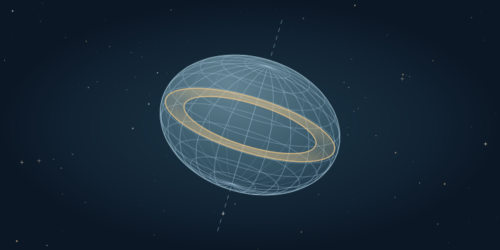
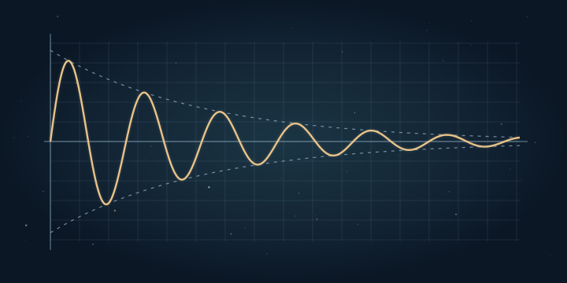

能层星
当一颗足够致密的星体转得很快时，就有可能产生能层，这颗产生了能层的星体就叫能层星（Ergostar）。
能层星能不能像旋转黑洞那样作为中心引擎驱动产生短伽马射线暴（sGRB）？
Strangeon ergostarsResearch

当一颗足够致密的星体转得很快时，就有可能产生能层，这颗产生了能层的星体就叫能层星（Ergostar）。
能层星能不能像旋转黑洞那样作为中心引擎驱动产生短伽马射线暴（sGRB）？
Strangeon ergostars
实际的星体往往不是处于平衡态的，而是在振荡（比如 f-mode，r-mode，w-mode）。随着星体转速提高，这些振荡模式可能变得不稳定（CFS 不稳定性）。
其中时空振荡的 w-mode 不稳定性与能层高度相关，因此有必要检验这些能层星是否导致 w-mode 准简正模变得不稳定。
The w-mode instability of strangeon ergostars and its impact on energy extraction